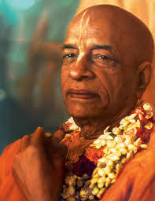
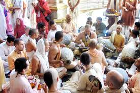

Experience Divinity with
Kirtan Premi Das
Propagating the sound incarnation of God through the legacy of Gaudiya Vaishnavism. An attempt at Srila Prabhupada's mission.
The Significance of Kirtan
Harinam Sankirtan is the yuga-dharma for this age. In the Kali Santarana Upanishad, it is stated that the Hare Krishna Maha-mantra is the only way to cross the ocean of nescience in this age of Kali.
Kirtan is not just music; it is a direct connection with the Divine. When we chant the names of Krishna, we are directly associating with Him. It cleanses the mirror of the heart (ceto-darpana-marjanam) and extinguishes the fire of material existence.
Spiritual Lineage & Biographies
Honoring the masters who paved the way for the global Sankirtan revolution.

Srila Prabhupada
His Divine Grace A.C. Bhaktivedanta Swami Prabhupada (1896-1977). At the age of 69, he traveled alone to New York with only a few dollars and a trunk of translations. Within 12 years, he established over 100 temples and initiated thousands into the chanting of Hare Krishna.
He is the "Senapati Bhakta" (Commander-in-Chief) foretold by Lord Chaitanya, who would spread the Holy Name in every corner of the globe. Every mridanga beat heard today in the West is a testament to his miraculous compassion.
Read Full Biography
Aindra Prabhu
The visionary pioneer of the 24-hour Kirtan at Krishna Balaram Mandir, Vrindavan. For over 24 years, Aindra Prabhu personally led the kirtan team, rarely leaving the holy dhama. He transformed the landscape of modern kirtan by re-introducing classical ragas and a deep sense of 'bhava'.
His legacy is not just in the recordings he left behind, but in the thousands of "Aindra-generation" kirtaniyas who now carry the flame of the Mahamantra with artistic excellence and spiritual fervor.
Discover His Legacy
Kirtan Premi Prabhu
"Kirtan is the breath of the soul."
A dedicated servant of the Holy Name, Kirtan Premi Prabhu has spent decades travelling and sharing the bliss of Mahaprabhu's mission. His kirtans are known for their deep meditative quality and soul-stirring melodies.
Having served extensively in the Vrindavan 24-hour kirtan team, he imbibed the "Aindra-style" of kirtan—characterized by its intensity, rhythmic complexity, and unwavering focus on the pleasure of Radha-Shyamasundara.
The Guru-Shishya Parampara
Knowledge is like a river; it must flow from the source through an unbroken chain of authorized teachers. We belong to the Brahma-Madhva-Gaudiya Sampradaya, ensuring that the message of the Srimad Bhagavatam remains pure and undiluted.
Upcoming Kirtan Events
Loading sacred gatherings...
Stay connected with the transcendental vibrations.
Voices of the Community
Fetching heartfelt messages...
Support the Mission
Your contributions help us sustain the 24-hour Kirtan efforts and support the propagation of the Holy Name globally.